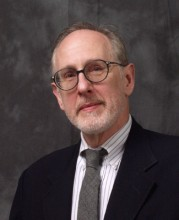

Please note: the AAS Obituaries are temporarily being hosted on this website while their full content is being ingested into the PubPub publishing platform newly adopted by the Bulletin of the American Astronomical Society. When the migration is complete, your existing links will take you to the final, migrated content. Contact peter.williams@aas.org with any questions.
Douglas S. Hall (1940-2013)

Reprinted with permission from
Vanderbilt University
.
Douglas S. Hall, professor of physics and astronomy, emeritus, and former director of Vanderbilt Dyer Observatory, died March 16 after a brief illness. He was 72.
Hall was a distinguished astronomer and scientist credited with several significant discoveries. He and his student researcher became the first to measure the mass and diameter of a very young double star, and then to demonstrate observationally that such very young stars assume a flat, toroidal shape during their early stages. “My analysis has revealed, quite unexpectedly, that one of the two stars is shaped like a doughnut, presumably as a result of extremely rapid spinning,” Hall told the Tennessean in 1971. The discovery made national news headlines.
Hall was the co-discoverer of star spots (similar to sunspots) on stars, proposing that such spots were responsible for variations in the stars’ brightness. His work was key to establishing the origin of variability on close binary stars known as RS Canum Venaticorum variable stars. His working definition for them is still used today.
In addition to his many research interests, Hall served as director of Dyer Observatory for more than 15 years. His role at Dyer not only allowed him to do hands-on research, but it also made him the public face of all things celestial in the Nashville area.
Hall loved to share his knowledge with people, recalled Rocky Alvey, who was hired by Hall in 2000 and today is director of Dyer. “He was a very gentle, wonderful man—we’re about public outreach here—and he was great with the public,” Alvey said. “Some of my best memories are of hearing him get questions at public nights, or when we’d get calls about a meteor or something someone saw in the sky. Some of the questions were very out there, about UFOs or such, and he always dealt with them with a lot of tact or a little humor. He never made the person feel like they’d asked a stupid question.”
That joy of sharing astronomy with the public also was evident in his work with amateur astronomers. Hall encouraged backyard astronomers to contribute to his research and other scientific knowledge. He is credited for forging bonds between professional and amateur astronomers and was the founder and longtime leader of the International Amateur–Professional Photoelectric Photometry Group.
“He was the first astronomer to actively recruit and train amateur astronomers to make the kind of measurements needed to gather data,” said Gregory Henry, one of Hall’s graduate students who is now astronomer at the Center of Excellence in Information Systems at Tennessee State University. “This is now common, these citizen scientists, amateurs who are commonly assisting with scholarly research. He mentored amateur astronomers and harnessed the capabilities of what was there.
“He was also the first professional astronomer to take advantage of robotic telescopes. He would meet with amateurs across the country, and it was in such a meeting that the idea about creating an automated telescope first came about. In astronomy, researchers and amateurs would have to stay up all night, take measurements, write them down—it was tedious,” Henry said. “Lou Boyd in Phoenix succeeded in building the first telescope (in 1983) that could take the measurements that Doug and I needed.” Hall put Boyd and his telescope to work capturing data on 75 stars over four years. The consistent, accurate and efficient results proved to be a technological breakthrough for the time, prompting Hall to apply for and be awarded a National Science Foundation grant for an automatic photoelectric telescope for Vanderbilt in 1987.
“He was a giver of his time and expertise, not just with me but with the other graduate students and a bevy of amateur astronomers,’’ Henry said. “Doug was a teacher as well as a researcher. He loved to explain things in his area of expertise.”
In addition to his accomplishments in astronomy, Hall also served on various committees at Vanderbilt. “Doug was a valued colleague on the administrative committee for seven years, where his concern for the well-being of undergraduate students was clearly evident,” said M. Fräncille Bergquist, associate dean of the College of Arts and Science. “He was generous with his time, perceptive with his observations and kind with his decisions.” Adminstratively, as chair of the academic standards and procedures committee from 1979 to 1982, he was instrumental in the revision of Vanderbilt’s grading system from a 3.0 scale to its current 4.0 scale.
A native of Kentucky, Hall studied chemistry at Swarthmore College before turning to his lifelong passion of astronomy. While earning a master’s and doctorate in astronomy at Indiana University, he spent his summers studying and working at Harvard College Observatory and Kitt Peak National Observatory in Arizona. He joined Vanderbilt’s College of Arts and Science in 1967 as assistant professor of astronomy and was later promoted to professor. He was named professor of physics and astronomy, emeritus, in 2002, upon his retirement from Vanderbilt.
A distinguished researcher and lifelong scholar, Hall never stopped investigating and learning new things. He was a caver, voracious reader and classical music aficionado who played classical music at night while he made his observations, according to his wife, Mimi Kemp Hall, whom he met when she was registrar of the College of Arts and Science. In his retirement, he became interested in Civil War history, in particular the Battle of Nashville, and working outdoors in the woods on the Halls’ property. Hall was also the author of two books and more than 400 scientific papers on astronomy.
“So many people look at the world and look at it through filters. He wanted to look at the truth,” Alvey said. “He was a great scientist. He looked at the stars and didn’t bring his preconceptions. He wanted to know what they were—the objective truth.”
He is survived by his wife; two sons, Bruce Douglas Hall and Brandon Scott Hall; one sister; and a brother.
Submitted by Nancy Wise
BAAS Citation: BAAS, 2013, 45, 013